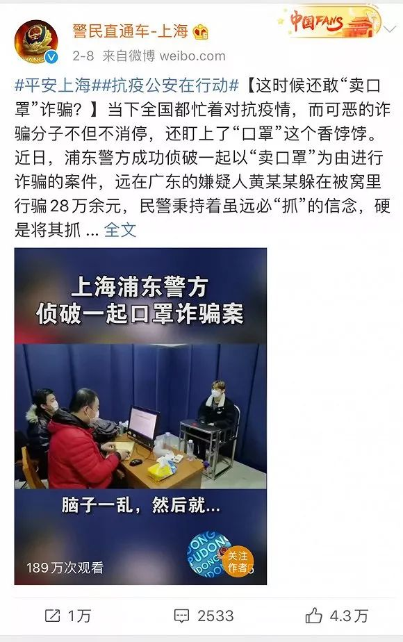
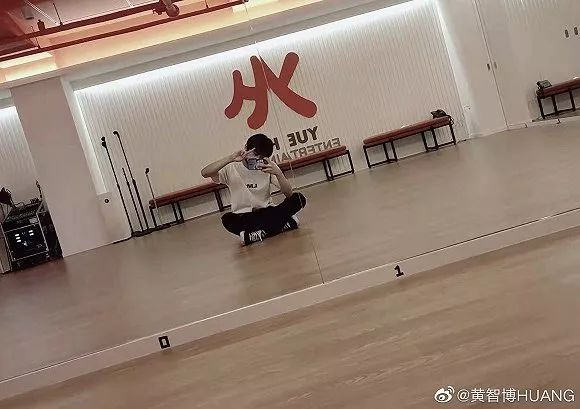

武汉外卖员穿过人间烟火
原文链接 备份链接 摘要：新型冠状病毒肺炎袭城之后，外卖员老计（化名）觉得武汉的马路变宽了，武汉人的面目也温柔下来。大年初一，他给武昌医院的医生送了一餐鲍鱼饭。才华街友谊大道路口的药店口罩卖完了，消毒液还有少量存货，他秒发微博，广而告之。 …
记者：刘睿欣
“
颇为讽刺的是，一周前（2月4号），也就是被捕的前一天，黄智博还在微博发布手写信，支援奋战在抗疫一线的工作者，表示“我们同心协力打赢这场战疫，武汉加油！中国加油！”这也是黄智博迄今为止发布的最后一条微博。
”
2月13日晚间，有网友爆料称，乐华娱乐旗下艺人黄智博因涉嫌口罩诈骗案在家被捕。根据身份证号、生日以及随后曝光的审讯视频，确认为黄智博本人。在视频中，黄智博被问及卖口罩骗人的原因时，回答道：“脑子一乱，然后就……”
由时间及事件过程倒推来看，黄智博诈骗案指向上海市公安2月6日发布的一则消息：2020年2月1日上午，家住浦东的陆女士通过贴吧寻找到一位卖口罩的商家，双方通过微信商定以单价0.9元购买40万个口罩，并预付50%的定金10.7万元。但商家收到预付款后，却要求陆女士自己去扬州取货。陆女士到达扬州无法找到提货地点，遂报警。警方经缜密侦查后，于2月5日上午在广东省陆丰市抓获了犯罪嫌疑人，并确认这是一起系列网络诈骗案，总案值人民币28万余元。上海市警民直通车通过微博发布了当时的现场照片，在被缴获的众多物品中，除黄智博的个人证件、少量现金外，还包括一张由粉丝拍摄的个人照片。
图源：警民直通车-上海微博截图
而根据2020年最新诈骗罪量刑标准，诈骗公私财物价值达到三万元至十万元以上的，应当被认定为刑法第266条规定的“数额巨大”，处三年以上十年以下有期徒刑，并处罚金。再加上黄智博在诈骗过程中涉嫌发布虚假信息、诈骗救灾医疗款物，在量刑时还会酌情从严惩处。有网友甚至仿照平日里追星的口气调侃道：“出黄智博探监名额，名额1个，不贵，速来。”
黄智博出生于1999年11月18日，今年刚满20岁。据公开资料显示，他曾是韩国Big Hit娱乐公司的练习生，并通过了CUBE娱乐公司的面试。2019年，黄智博以乐华娱乐公司练习生的身份参加优酷的选秀节目《以团之名》，并成为星耀班的一员。在节目中，黄智博一直给人寡言少语的印象。因为第二期同公司队友周艺轩未能选择他加入队伍，黄智博最后只能进入赵品霖的团队，这一消息还在网络上激起了小小的水花。最终，黄智博因一名之差未能出道，有消息称他又重新前往韩国练习，为将来出道做准备。
黄智博在乐华娱乐练习室，图源：黄智博个人微博
2020年1月，有粉丝拍到了黄智博前往《少年之名》（《以团之名》第二季）录制的照片。同时期被曝光的其他参赛选手还有李希侃、胡文煊、林陌等人。后因疫情影响，《以团之名2》延期录制，黄智博也回到了广东老家。
13日晚，针对练习生黄智博“借卖口罩实施诈骗被抓”一事，乐华娱乐在新浪微博发表声明，表示黄智博此举严重违反了公司训练生合同及管理制度规范，公司已与黄智博解除《训练生合同》。乐华娱乐强烈谴责利用疫情扰乱社会秩序的违法犯罪行为，并针对此事件对社会造成的恶劣影响深表歉意。
但颇为讽刺的是，一周前（2月4号），也就是被捕的前一天，黄智博还在微博发布手写信，支援奋战在抗疫一线的工作者，表示“我们同心协力打赢这场战疫，武汉加油！中国加油！”这也是黄智博迄今为止发布的最后一条微博。
 图源：黄智博个人微博
图源：黄智博个人微博
未经授权 禁止转载

原文链接 备份链接 摘要：新型冠状病毒肺炎袭城之后，外卖员老计（化名）觉得武汉的马路变宽了，武汉人的面目也温柔下来。大年初一，他给武昌医院的医生送了一餐鲍鱼饭。才华街友谊大道路口的药店口罩卖完了，消毒液还有少量存货，他秒发微博，广而告之。 …
原文链接 备份链接 天气从昨天开始好转。雨停了。今天下午还出了一小会儿太阳。天空明亮，会让人心情好上许多。只是被关在家里的人，烦燥感会多起来。毕竟从封城起，人们已经被关了五天。五天中，不只是多出谈心的机会，大概吵架的机会也不老少。毕竟各家 …
原文链接 备份链接 你以为他们只会追星？他们从线上到线下的组织力，非常时刻竟很亮眼 粉丝团成员大多是二十岁上下的年轻人，这是他们第一次面临真正的危情时刻 本文首发于南方人物周刊 文 | 本刊记者 张明萌 实习记者 梁翰文 编辑 | 周 …
原文链接 备份链接 抗击新型肺炎自救第二天: 132跳绳，07:13腹肌锻炼。图二是外网可以下载的家庭健身工具，内网如有朋友需要可联系。 抗击新型肺炎的第二天: 室友买了蔬菜，我买了很多梨，小室友又煮了梨汤，大家互相帮助，很暖。 有朋友口 …
原文链接 备份链接 澎湃新闻记者 李菁 韩晓蓉 1.5万只口罩，年仅15岁的他，在无人愿意“冒险”的情况下，只身一人，带着5个重重的行李箱，从印尼“人肉”背回了国内。 最近，上海市民办新黄浦实验学校八（2）班学生赵珺延“火了”，教师、同 …